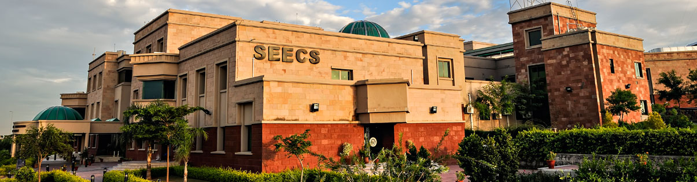

1. Masters in Information Security

- Masters in Information Security
- University: National University of Science & Technology (NUST)
- Campus: School of Electrical Engineering & Computer Sciences (SEECS)
- 2016-2021
- Distinction: First Position Holder
- CGPA 3.87/4
- B.E. Electrical (Telecommunication)
- University: National University of Science & Technology (NUST)
- Campus: Military College of Signals (MCS)
- 2009-2013
- Distinction: 6 Times Scholarship Holder for securing more than 3.5 GPA
- CGPA 3.49/4
- F.Sc. Pre-Engineering
- College: Islamabad Model College for Boys (IMCB) F-8/4, Islamabad, Pakistan
- Board: Federal Board of Intermediate and Secondary Education (FBISE), Islamabad, Pakistan
- 2006-2009
- Distinction: Second Position Holder
- Marks 876/1100/4
- Matric Pre-Engineering
- School: F.G. Boys Model School G-8/4 Islamabad, Pakistan
- Board: Federal Board of Intermediate and Secondary Education (FBISE), Islamabad, Pakistan
- 2004-2006
- Distinction: First Position Holder
- Marks 835/1050/4